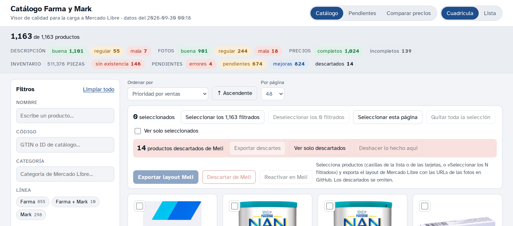
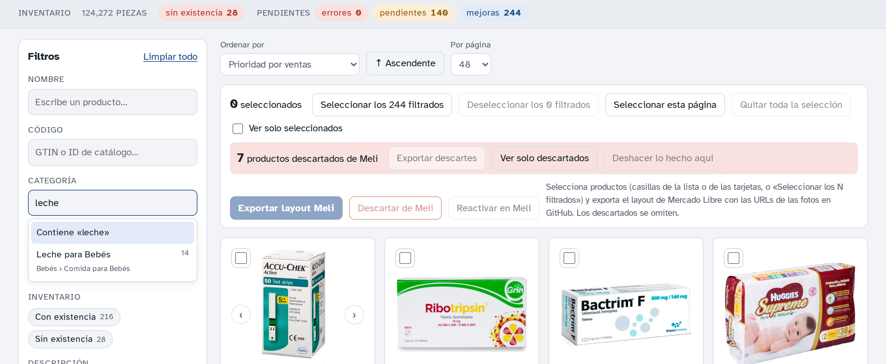
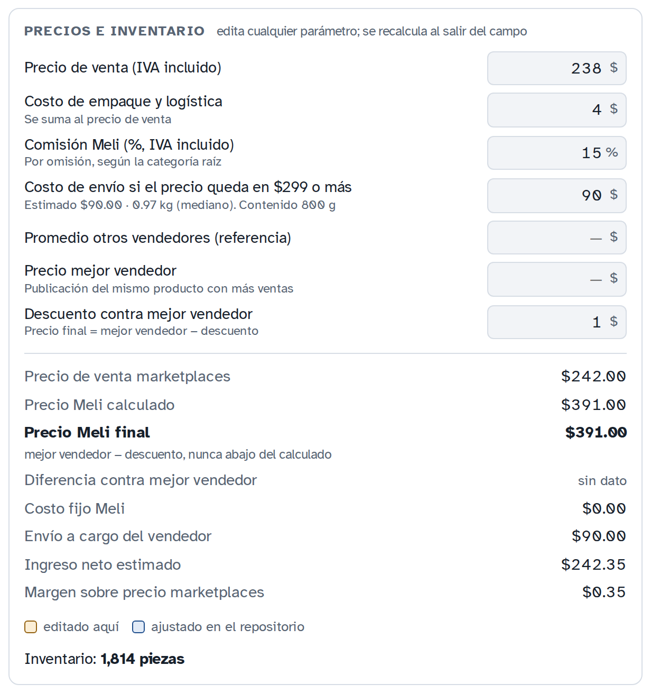
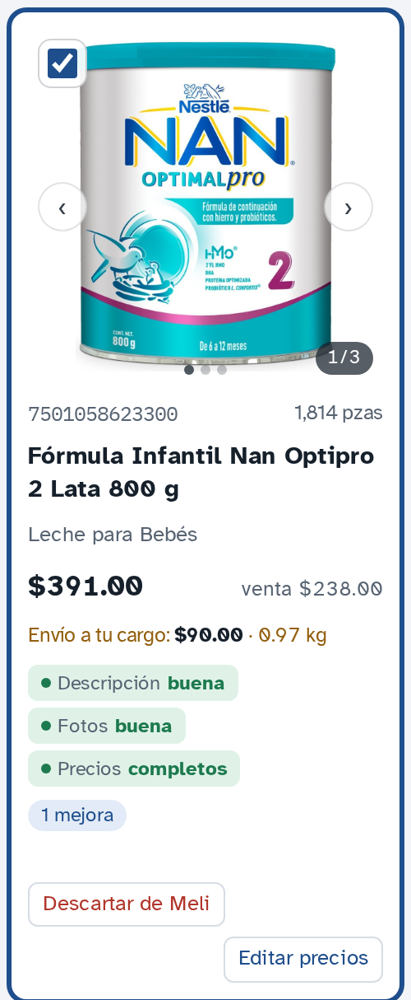
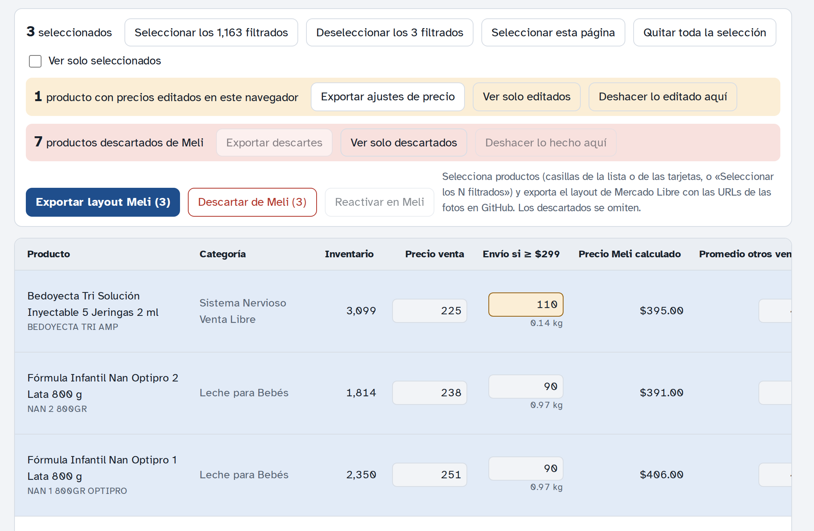
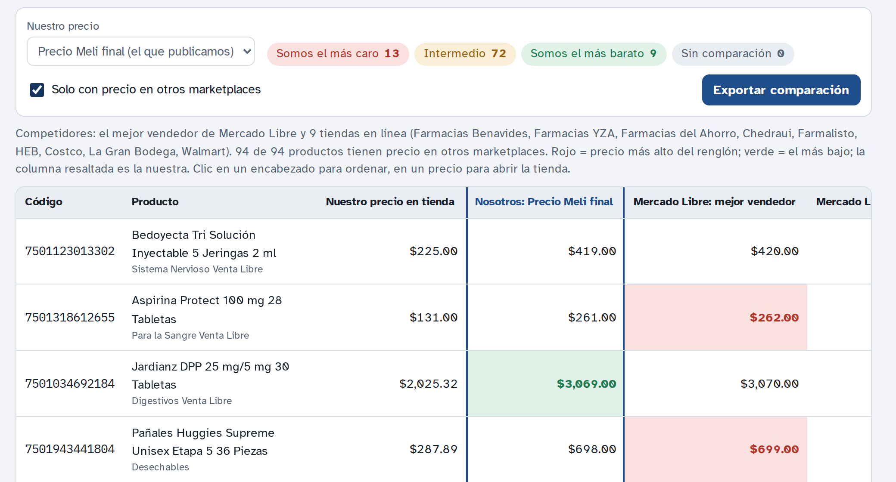
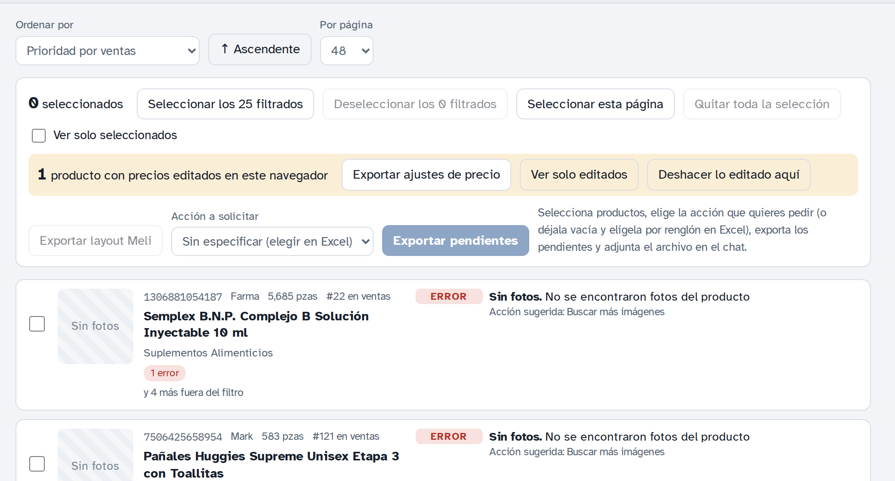

Catálogo Farma y Mark · Mercado Libre
Cómo filtrar productos, editar precios, descargar el layout de importación para Mercado Libre y seguir trabajando el repositorio con Claude o Codex.
git clone https://github.com/zublimemx/marketplaces-product-images) y descomprímelo. Si el repositorio está privado, entra con una cuenta de GitHub que tenga acceso.python3 scripts/visor_server.py y accede al visor mediante la URL publicada por Nginx. Nginx reenvía las rutas relativas /api/meli/ al backend local; el navegador no necesita conectarse a su propio 127.0.0.1.Para abrir un producto directo, agrega #p y su código al final de la dirección, por ejemplo …/visor/index.html#p7501058623300.


| Indicador | Qué significa |
|---|---|
| Descripción: buena / regular / mala | Buena: verificada con confianza alta, 800 caracteres o más y 3 secciones. Regular: verificada pero más corta o con confianza media. Mala: sin verificar o muy corta. |
| Fotos: buena / regular / mala | Buena: 2 fotos o más y la principal de 800 px o más. Regular: una sola foto o la principal chica. Mala: sin fotos o todas chicas. |
| Precios: completos / incompletos | Completos cuando se conocen el precio de venta, el precio Meli calculado y el precio del mejor vendedor. |
Los parámetros de precio de cada producto se editan en tres lugares, y en los tres se recalcula todo al salir del campo (o al presionar Enter):
| Parámetro | Qué es |
|---|---|
| Precio de venta | Precio del catálogo del sistema, IVA incluido. |
| Costo de empaque y logística | Se suma al precio de venta (por omisión $4). |
| Comisión Meli | Porcentaje de la publicación Clásica, IVA incluido. Escríbela como 14 para 14 %. |
| Costo de envío | Lo que Mercado Libre cobra por el envío gratis cuando el precio queda en $299 o más. Viene estimado de $75 a $150 por peso y tamaño. |
| Promedio otros vendedores | Referencia; lo trae la API de Mercado Libre. |
| Precio mejor vendedor | Precio de la publicación del vendedor con más ventas; lo trae la API. |
| Descuento contra mejor vendedor | Cuánto abajo del mejor vendedor se publica (por omisión $1). |
Cómo se calcula. Precio marketplaces = precio de venta + empaque. Precio Meli calculado = lo mínimo para recibir el precio marketplaces después de la comisión y el costo fijo; si el precio queda en $299 o más, en lugar del costo fijo incluye el envío. Precio Meli final = mejor vendedor − descuento, siempre que no quede abajo del calculado; si no, el calculado. Es el precio que va al layout.
Guardar para todos. Lo editado se guarda solo en tu navegador, pero ya cuenta en indicadores y exportaciones. La barra naranja muestra cuántos productos editaste: Exportar ajustes de precio descarga un Excel; adjúntalo en el chat con la IA y pide «Versiona estos ajustes de precio». Deshacer lo editado aquí borra lo local (pide dos clics).


Naranja: editado en este navegador.
Azul: ajustado en el repositorio.
Rojo: valor inválido; no se guarda.
Borrar un campo regresa al valor original.
En Configuración · referencias de categorías de Mercado Libre puedes listar referencias, cargar una nueva o reemplazar una anterior. El visor valida la categoría y presenta las diferencias del esquema. Estas referencias solo sirven para validar; siempre publicas usando la planilla operativa fresca.

Fotos: Mercado Libre descarga las imágenes de las URLs de GitHub, que solo funcionan mientras el repositorio es público. Antes de importar, en GitHub ve a Settings → Danger Zone → Change repository visibility y hazlo público; al terminar la importación, regrésalo a privado.
Los productos descartados de Meli no se exportan. Los precios que editaste en tu navegador sí van en el archivo.
Comparar precios: el botón Comparar precios (arriba) muestra una lista tipo Excel con nuestro Precio Meli final (o el de tienda), el mejor vendedor de Mercado Libre y el precio en cada tienda en línea (Benavides, YZA, del Ahorro, Chedraui…). En cada renglón el más alto va en rojo y el más bajo en verde, y la columna «Nuestra posición» dice si somos el más caro, el más barato o intermedio. Exportar comparación descarga el Excel; en su hoja Captura puedes agregar precios de otras tiendas y pedir «Versiona estos precios de otros marketplaces».

Base de datos: todos los datos están también en data/catalogo.db (SQLite), que se abre con DB Browser for SQLite o DBeaver. La IA la regenera en cada cambio.
Descartar un producto de Meli: botón Descartar de Meli en la tarjeta, en la columna Meli de la lista o en el detalle (ahí escribes el motivo); para varios, selecciónalos y usa Descartar de Meli (N) en la barra. Sale del layout al momento en tu navegador; Reactivar en Meli lo regresa. Para dejarlo en el repositorio, en la barra roja pulsa Exportar descartes, adjunta el Excel en el chat y pide «Versiona estos descartes».
La sección Pendientes (arriba a la derecha) lista cada producto con lo que le falta: errores (impiden o ponen en riesgo la publicación), pendientes (falta un dato o una confirmación) y mejoras, cada uno con su acción sugerida.

El repositorio guarda todo lo necesario para que otra sesión de IA continúe sin perder contexto: la guía para agentes (AGENTS.md, y CLAUDE.md para Claude), el estado y las próximas tareas (PENDIENTES.md), las reglas de negocio y los procedimientos (docs/). Cada cambio se hace en una rama con un PR que se fusiona, y PENDIENTES.md queda siempre al día.
zublimemx/marketplaces-product-images.CLAUDE.md y AGENTS.md por su cuenta. Pídele lo que necesitas en lenguaje normal (tabla de abajo).bash scripts/setup.sh como script de preparación. En Codex CLI, habilita la red del sandbox y la búsqueda web (codex --search).AGENTS.md por su cuenta; las peticiones son las mismas.| Qué quieres | Qué pedir |
|---|---|
| Saber cómo va el proyecto | «Lee PENDIENTES.md y dime el estado y las próximas tareas» |
| Continuar el trabajo | «Continúa con la siguiente tarea de PENDIENTES.md» |
| Guardar precios editados | Adjunta el Excel de ajustes: «Versiona estos ajustes de precio» |
| Resolver pendientes | Adjunta el Excel de pendientes: «Procesa las solicitudes de este archivo» |
| Actualizar precios de competencia | «Actualiza los precios de competencia con la API de Mercado Libre» (con un token o código de autorización vigente) |
| Precios en otras tiendas | «Busca precios en otros marketplaces para los siguientes 100 productos» o adjunta el Excel de Comparar precios: «Versiona estos precios de otros marketplaces» |
| Actualizar precios y existencias | Adjunta los Excel del sistema: «Actualiza precios y existencias y regenera el layout y el visor» |
| Otro marketplace | «Arma el layout de importación para Shopify» (u Odoo, Amazon) |
Lo que la IA necesita de ti (no está en el repositorio, a propósito):
.env, nunca en GitHub.Reglas del repositorio: nunca se borra; es privado normalmente y público solo durante la importación a un marketplace; ninguna credencial se sube a GitHub; todo cambio va por PR con los pendientes actualizados.